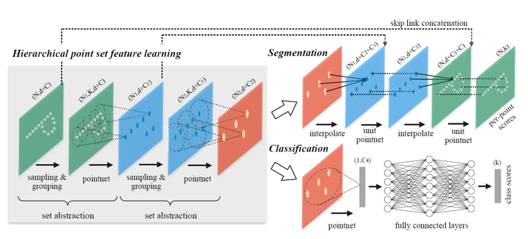
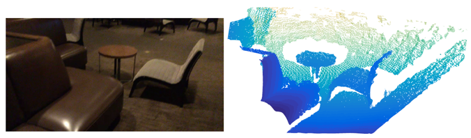
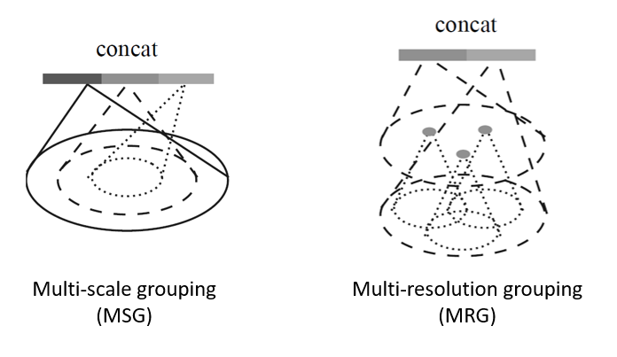
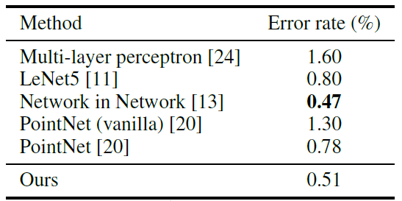
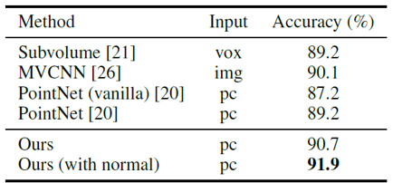
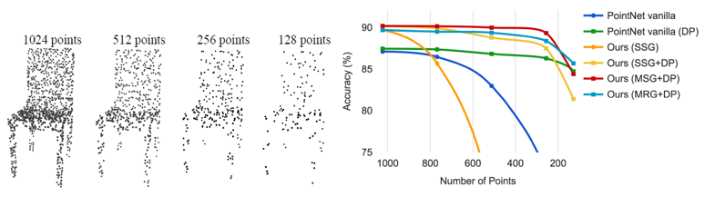
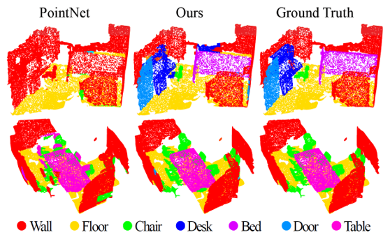
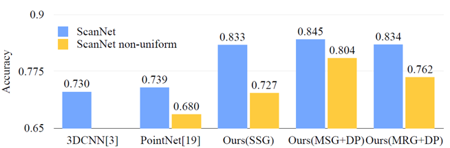

PointNet++ - Deep Hierarchical Feature Learning on Point Sets in a Metric Space 리뷰
오늘 소개드릴 논문은 Stanford에서 2017년 NIPS에 발표한 Pointnet++: Deep hierarchical feature learning on point sets in a metric space 논문에 대한 리뷰입니다.
이 논문은 Point cloud 형식의 데이터를 Deep learning 분야에 적용시킨 선구적인 논문인 PointNet의 후속편으로, local한 특징을 잡아내지 못하는 기존의 PointNet을 보완하여 classification 및 segmentation 성능을 크게 끌어올렸습니다.
그럼 시작하겠습니다!
PointNet
PointNet++에 대하여 설명드리기 전에, 전편인 PointNet에 관해서 간단히 짚고 넘어가겠습니다. (자세한 설명은 PointNet 논문 리뷰를 참고해주세요.) Point cloud는 3차원 공간 내의 물체를 표현하기 위한 데이터의 한 형식으로 각 점들에 대한 좌표값으로 구성되어 있습니다. Point cloud는 sparse한 점들의 집합이기 때문에 계산량 및 메모리 차원에서 효율적이지만, 순서가 없는 집합 형태의 데이터이기 때문에 neural network가 이를 처리하려면 permutation-invariant한 특성을 가진 layer를 포함하고 있어야 했습니다. PointNet에서는 symmetric function 중의 하나인 max-pooling 함수를 활용하여 point cloud 데이터에 대한 global한 feature vector를 추출하였습니다. 하지만 max-pooling 함수의 특성상 최대값을 제외한 local한 정보들을 소실될 수밖에 없고 이는 정교한 경계선 설정이 중요한 segmentation task 등에서 성능 저하의 요인이 되었습니다. PointNet++에서는 몇 가지 구조를 제안하여 local한 feature vector를 추출하였습니다.
Local한 특징을 추출하는 것은 중요합니다. CNN에서도 다양한 receptive field를 가지는 convolution kernel을 활용함으로써 local한 특징을 추출하였고, 이는 2D image들에 대한 폭발적인 성능 향상을 이뤄냈습니다. PointNet++는 계층적 구조의 neural network를 활용하여 다양한 scale의 local feature를 추출하였고, 이를 통합하여 SOTA의 classification 및 segmentation 성능을 기록할 수 있었습니다. 그럼 PointNet++에 대해 좀 더 자세히 알아보겠습니다.
PointNet++
 PointNet++는 Set abstraction layer과 Density adaptive layer로 구성되어 있습니다.
Set Abstraction
PointNet++에서는 set abstraction이라고 부르는 과정을 통해 point cloud의 local feature를 추출하였습니다. Set abstraction을 거치면, point 들의 집합은 이전보다 적은 수의 점들로 구성된 point cloud로 추상화되며, semantic한 정보를 담게 됩니다.
Set abstraction은 세 단계로 구분할 수 있습니다. 우선 sampling 단계에서는 point cloud의 local한 부분집합의 중심에 해당하는 중요한 몇 개의 점들을 선택합니다. 이후 grouping 단계에서는 sampling 단계에서 찾은 중요한 몇 개의 점들과 이웃한 점들을 찾고 하나의 집합으로 구성합니다. 마지막으로 pointnet 단계에서는 local한 점들의 집합에 대한 패턴을 encoding하여 feature vector를 추출합니다.
예를 들어 Point cloud가 N 개의 점들로 구성되어 있고 각 점은 d 차원의 좌표를 가지며 C 차원의 feature vector를 가진다고 가정하겠습니다. Set abstraction 과정을 거치면 N x (d+C) 크기의 input 행렬이 N’ x (d+C’) 크기의 행렬로 변환되어 출력됩니다. 이 때 N’ 는 subsampling된 점들의 개수이고, C’ 는 중심점 행렬의 feature vector의 차원입니다.
Sampling 단계에서는 N 개의 점들 중 N’ 개의 점을 중심점으로 선택합니다. 이 N’ 개의 점들은 전체 점들 중 나머지 점들과의 거리가 가장 먼 점들로 구성됩니다. 이때 이 거리라는 개념은 Uclidian distance 일 수도 있고 그 외 다른 거리 관련 metric일 수도 있습니다. 논문에서는 이 거리가 가장 먼 점들의 집합을 Farthest point sampling (FPS) 알고리즘을 반복적으로 적용해 얻었다고 설명하였습니다. 또한, 이렇게 서로 최대한 떨어져 있는 점들을 선택하게 되면 random sampling을 통해서 점들을 선택하는 것보다 더 일반적이고 전체적인 범위의 point들을 얻을 수 있습니다.
Grouping 단계에서는 sampling 단계에서 추출한 N’ 개 중심점들의 주변 점들을 선택하여 local한 영역으로 묶어줍니다. 각 중심점과 묶이는 주변 점들의 개수는 영역마다 다를 수 있는데, 후에 설명드릴 pointnet 단계에서 점들의 개수와 상관 없이 같은 크기의 feature vector로 변환해주기 때문입니다. 또한 이웃한 점들을 선택하는 방식도 두 가지로 나뉠 수 있습니다. 우선, ball query 방식은 반지름 r 을 정해 이 반지름 내에 있는 점들을 모두 이웃한 점으로 선택하는 방식입니다. 또한, kNN 방식은 정해진 K 라는 개수의 가장 가까운 점들을 이웃한 점으로 선택하는 방식입니다. 논문에서는 ball query 방식을 선택했는데, kNN과 비교했을 때 정해진 크기의 지역을 확실하게 표현할 수 있기 때문입니다. 이는 일정하게 sampling되지 않은 point cloud 데이터에서 영역 별로 범위가 달라지는 문제를 방지할 수 있게 됩니다.
마지막으로 pointnet 단계에서는 각 local한 영역에 대해 특징 정보를 encoding한 하나의 feature vector를 추출할 수 있습니다. 각 중심점(총 N’ 개)별로 생성된 K 개의 이웃한 점들에 대한 (d+C) 크기의 feature vector를 행렬로 표현하면 N’ x K x (d+C’) 크기의 행렬이 되는데, 이 행렬이 pointnet 단계를 거치면 N’x(d+C’) 크기의 feature vector로 변환됩니다. 이 때, 점들의 좌표값은 중심점과의 상대적인 거리의 차이에 대한 값이 들어가게 되는데, 이를 통해 점들 사이의 위치적 관계에 대한 정보를 잡아낼 수 있기 때문입니다.
Density Adaptive Feature Learning
 Point cloud 데이터는 위의 그림처럼 non-uniform한 밀도 분포를 가지는 것이 대부분입니다. 이렇게 일정하지 않은 점들의 분포는 point cloud의 특징에 대한 학습을 어렵게 만드는데, density가 높은 point cloud에 대해 학습한 네트워크는 sparse한 점들의 point cloud를 만났을 때 정보가 부족하다고 느끼고 특징을 제대로 표현하지 못하기 때문입니다. (그 반대의 경우도 마찬가지입니다.) 논문에서는 이를 해결하기 위해 point cloud의 sampling density를 변화시키며 학습하였습니다. 또한, 다양한 scale의 point cloud에서 feature vector를 추출하는 multi-scale feature extraction 구조를 활용하였는데, 저자는 이를 density adaptive layer 이라고 표현했습니다. 다양한 크기의 density를 가지는 point cloud를 학습하는 두 가지 방법에 대해 소개하겠습니다. 
- Multi-scale grouping (MSG)
우선 grouping 단계를 다양한 scale로 여러 번 적용하여 하나의 중심점에 대해 여러 scale의 point group을 얻는 방법이 있습니다. 각 point group에서 각각 추출한 feature vector를 이어붙이면(concatenate), multi-scale feature vector를 얻을 수 있게 됩니다. 이 때, 각 point group은 임의의 dropout ratio를 선택하여 그 비율에 맞게 random하게 down-sampling(dropout) 하여 각 point group마다 서로 다른 scale로 균일하지 않은 density를 가지게끔 변환해주었습니다. 이러한 과정을 거치면 다양한 sparsity와 서로 다른 uniformity를 가지는 점들을 얻을 수 있습니다. 하지만 MSG는 각 중심점들과 그 이웃한 점들이 모두 pointnet을 거쳐야 하므로 게산량 차원에서 아주 비효율적이고 time-consuming하다는 단점이 있습니다. 논문에서는 이를 보완하기 위해 multi-resolution grouping을 제안하였습니다.
- Multi-resolution grouping (MRG)
MRG는 MSG의 단점을 보완한 grouping 방식입니다. MRG는 서로 다른 scale로 얻은 두 feature vector를 이어붙여서(concatenate) multi-scale feature vector를 얻습니다. 이 때, 첫 번째 vector는 local group에 해당하는 점들 전체에 대해 pointnet 단계를 거쳐서 얻고, 두 번째 vector는 local group에 대해 그보다 한 단계 아래의 sub-region에서 얻은 feature를 종합하여 얻습니다. 저자는, 만약 input으로 들어오는 point cloud의 density가 낮다면, 첫 번째 vector에 의해 전반적인 특징에 대한 정보를 추출할 수 있고, density가 높다면, sub-region에 대한 feature가 높은 resolution 더 디테일한 특징 정보를 제공할 수 있다고 이야기합니다. 따라서 두 vector를 모두 이용하게 되면 여러 density의 point cloud에 대해서 모두 대응할 수 있으며, 계산량 측면에서도 효율적이라고 말합니다.
Point Feature Propagation
Set abstracion layer를 거치게 되면, sampling 단계에 의해 point cloud의 크기가 줄어들게 됩니다. 이렇게 얻은 feature vector를 segmentation task에 활용하려면 다시 원래의 크기로 복원해주어야 합니다. 복원해주지 않고 set abstraction을 하기 위해 모든 점들을 중심점으로 지정해서 feature aggregation을 해주는 방법도 있지만, 이는 computation cost가 너무 많이 들기 때문에 논문에서는 point cloud를 down-sampling하고 다시 interpolation 기반의 방법을 통해 up-sampling하는 방식을 제안하고 있습니다.
구체적으로, 이전 점들에 대한 feature vector로부터 (1/거리값) 으로 weighting을 가해서 interpolation하는 방법을 이용하였습니다. 또한 down-sampling 되기 전의 feature vector를 skip-connection을 통해 concatenate하여 부족할 수도 있는 정보량을 보충해주었습니다. Interpolation 과정은 원래 point의 개수로 맞춰질 때까지 반복해주었고, 결과로 얻은 feature vector를 통해서 segmentation task를 수행해주었습니다.
Experiments
PointNet++는 MNIST(2D Object), ModelNet40(3D Object), ScanNet(3D Scene) 등의 다양한 데이터셋에 대한 evaluation 과정을 통해 classifiaction 및 segmentation task에서 성능을 증명하였습니다.
-
MNIST  MNIST 데이터셋은 손글씨 숫자에 대한 60,000개 이상의 image입니다. PointNet++는 2D image의 좌표를 2D point cloud 형태로 변환하여 input으로 사용했는데, 기존 PointNet과 비교했을 때 error rate이 30% 이상 감소하는 등의 성능 향상을 보여주었습니다. 또한 기존 CNN 기반의 모델들과 비교했을 때도 더 좋은 성능을 보이기도 했습니다.
-
ModelNet40  ModelNet40 데이터셋은 40개의 클래스에 대한 CAD 모델입니다. CAD 모델은 3D Mesh 형태를 띄고 있기 때문에, 논문에서는 mesh의 표면을 sampling하여 3D point cloud 형태로 변환한 후에 PointNet++의 input으로 사용하였습니다. 또한 모델 구조는 3단계의 계층 단계에 3개의 Fully connected layer를 이어붙여서 구성했으며, 모든 point들의 좌표는 반지름 1의 구 안에 들어오게끔 하여 normalization을 해주었습니다. PointNet++는 3D classification task에서도 기존의 SOTA 모델로 알려진 MVCNN의 성능을 크게 뛰어넘었습니다.  또한 ModelNet 데이터셋을 활용하여 Density adaptive layer의 성능을 측정하는 ablation study를 진행했습니다. 위의 그림을 보면, 1024개의 점에 대한 point cloud로부터 random하게 점을 지워서 512, 256, 128개로 down-sampling하였습니다. 점의 개수가 다른 point cloud를 PointNet 및 PointNet++의 input으로 넣어주었을 때, 앞서 설명드린 density aadaptive layer (MSG 또는 MRG)를 적용시켜 multi-scale로 학습한 모델들은 점의 개수가 달라져도 robust한 결과를 보여주었습니다.
-
ScanNet
ScanNet 데이터셋은 실내 환경에 대한 1500개 이상의 3D point cloud 데이터로 구성되어 있습니다. 각각의 점들에는 해당 점이 어떤 물체에 속해 있는지에 대한 segmentation label이 달려 있습니다. PointNet++는 ScanNet에 대한 segmentation task에서도 아주 뛰어난 결과를 보여주었습니다. 계층적 구조를 통한 local한 feature 학습이 다양한 scale의 scene을 이해하는데 중요하다고 해석할 수 있을 것 같습니다.  ScanNet에서도 sampling density가 달라졌을 때 robust한 결과를 도출할 수 있는지 실험하였습니다. ScanNet 데이터를 non-uniform한 sampling density로 줄여서 학습한 뒤에 결과를 확인해보았습니다. 앞선 ModelNet40을 이용한 실험 결과와 마찬가지로, MRG 네트워크가 Single-scale grouping을 통해 학습한 네트워크보다 다양한 density의 데이터들에 대해 훨씬 더 좋은 결과를 보여주었습니다. 
Summary
PointNet과 더불어 PointNet++는 이전에 classification이나 detection 분야에서 활용되었던 multi-scale feature learning 기법을 point cloud 데이터에 적용시켜 급격한 성능 향상을 만들었습니다. 또한 Graph의 크기를 줄이는 graph coarsening이나 다시 graph의 크기를 키우는 point feature propagation 등 다양한 개념이 제시된 논문이라 의미가 크다고 생각합니다. 다음 번에는 이를 기반으로 attention 메커니즘을 적용시킨 논문을 한번 리뷰해보겠습니다. 읽어주셔서 감사합니다 :)
참고 문헌 및 출처